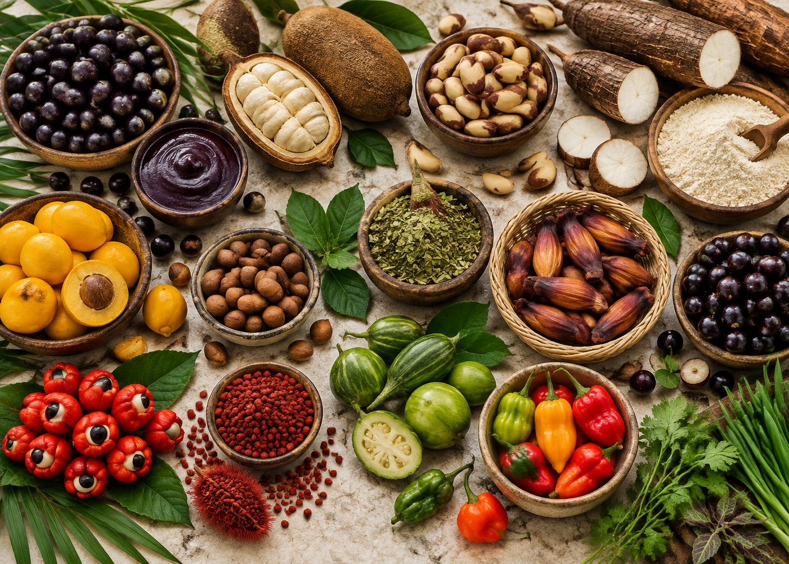
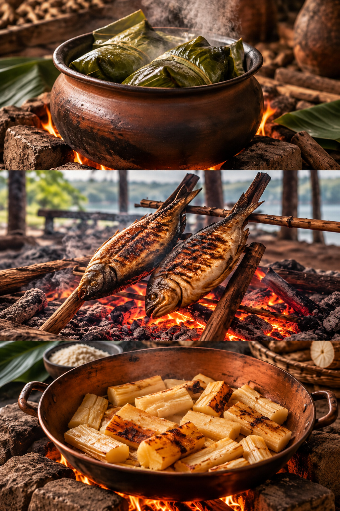

Norte
Base: mandioca, peixes amazônicos, açaí, jambu, tucupi e castanha-do-pará.
Temperos: chicória-do-Pará, alfavaca, pimenta-de-cheiro, cumari e coentro.
Uma viagem por ingredientes, memórias e modos de cozinhar que contam a história do Brasil e da América do Sul.
C
omida típica não é apenas uma receita: é resultado do clima, do solo, das migrações, dos povos originários e das técnicas transmitidas entre gerações. No Brasil, matrizes indígenas, africanas, europeias e asiáticas se encontraram e criaram cozinhas regionais muito diferentes.
Este guia percorre todos os conteúdos da especialidade: ingredientes e temperos regionais, técnicas peculiares, pratos de cada unidade federativa, culinária dos oito países da Divisão Sul-Americana e uma atividade prática para a unidade ou família.
“Originário” aqui indica um alimento nativo ou historicamente associado ao território e à sua cozinha. Muitos atravessam fronteiras estaduais: a natureza não segue linhas no mapa, e as tradições também não.

Base: mandioca, peixes amazônicos, açaí, jambu, tucupi e castanha-do-pará.
Temperos: chicória-do-Pará, alfavaca, pimenta-de-cheiro, cumari e coentro.
Base: milho, feijão-fradinho, coco, dendê, carne-seca e macaxeira.
Temperos: coentro, cominho, colorau, pimenta-malagueta e leite de coco.
Base: pequi, guariroba, baru, milho, mandioca e peixes do Pantanal.
Temperos: açafrão-da-terra, alho, cebolinha, pimenta-bode e urucum.
Base: feijão, café, milho, queijo, taioba, ora-pro-nóbis e frutos do mar.
Temperos: alho, cebola, louro, cheiro-verde, urucum e pimenta.
Base: erva-mate, pinhão, milho, trigo, uva, carnes e pescados.
Temperos: salsa, cebolinha, manjerona, louro, páprica e chimichurri.
Uma referência por estado e pelo Distrito Federal. O ingrediente destaca a identidade local; o prato mostra uma forma tradicional de levá-lo — ou outro produto regional — à mesa.

A folha lavada e passada rapidamente no fogo fica flexível. Ela embrulha peixe, milho ou massa e retém vapor, umidade e aroma durante o cozimento.
Técnica indígena: carnes ou peixes cozinham e defumam lentamente sobre uma grelha de madeira elevada acima das brasas.
No barreado paranaense, a tampa é selada com uma pasta de farinha e água. O vapor permanece dentro e a carne cozinha por muitas horas até desmanchar.
Uma cova aquecida com pedras e brasas recebe o alimento protegido por folhas e terra. O calor retido cozinha lentamente, como na pachamanca andina.
A Divisão Sul-Americana da Igreja Adventista reúne Argentina, Bolívia, Brasil, Chile, Equador, Paraguai, Peru e Uruguai. Abra cada prato para conhecer ingredientes e preparo.
Massa de farinha, água, gordura e sal; recheio de carne picada, cebola, pimentão, batata, ovo, páprica e cominho.
Refogue carne, cebola e temperos; junte batata cozida e esfrie. Recheie discos de massa, faça o repulgue nas bordas e asse até dourar.
Massa levemente adocicada com farinha e urucum; ensopado espesso de carne ou frango, batata, ervilha, cebola, pimenta, cominho e gelatina natural.
Prepare o guisado e gele até firmar. Recheie a massa, feche no topo e asse em forno forte. O caldo volta a ficar líquido por dentro.
Postas de peixe, tomate, cebola, coentro, cebolinha, alho, limão, azeite e urucum. A versão capixaba não leva dendê nem leite de coco.
Tempere o peixe. Monte camadas com vegetais em panela de barro, regue com azeite tingido de urucum e cozinhe tampado, sem adicionar água.
Milho verde batido com leite e manjericão; recheio de carne, cebola, cominho, frango, ovo cozido, azeitona e passas opcionais.
Faça o refogado de carne. Disponha em travessa com os acompanhamentos, cubra com o creme de milho, polvilhe pouco açúcar se desejar e asse até gratinar.
Batatas, queijo, cebola, urucum e sal. Para acompanhar: molho de amendoim, abacate, salada e ovo.
Cozinhe e amasse as batatas, misture cebola refogada com urucum, modele discos recheados de queijo e doure em chapa ou frigideira.
Fubá, cebola, ovos, leite, queijo fresco, gordura ou óleo e sal.
Refogue a cebola, misture aos demais ingredientes até obter massa grossa, coloque em assadeira untada e asse até firmar e dourar. Apesar do nome, é um bolo salgado.
Batata amarela, pasta de ají amarillo, limão, óleo e sal; recheio de frango desfiado ou atum com maionese, abacate e cebola.
Amasse a batata cozida e tempere com ají, limão, óleo e sal. Monte camadas frias de massa, recheio e abacate; finalize com ovo e azeitona.
Pão, filé bovino fino, presunto, muçarela, alface, tomate, maionese e ovo; bacon e azeitonas são complementos comuns.
Grelhe o bife, derreta o queijo sobre ele, frite o ovo e monte o sanduíche com os demais ingredientes. Sirva com batatas.
Rende cerca de 12 pedaços. É uma boa escolha estrangeira porque pode ser preparada antes do encontro, transportada com facilidade e servida morna.
Separe: 500 g de fubá, 3 cebolas, 4 ovos, 500 ml de leite, 400 g de queijo fresco, 80 ml de óleo e sal.
Refogue a cebola fatiada no óleo até ficar macia; deixe amornar.
Bata os ovos, junte leite, cebola, queijo esfarelado e fubá. Ajuste o sal.
Asse em forma untada a 180 °C por 35–45 minutos, até o centro firmar e a superfície dourar.
Sirva identificando o prato e seus ingredientes. Confirme antes se alguém tem alergia a leite ou ovos.
Para completar a experiência nacional, escolha receitas de regiões diferentes. Uma dupla acessível é baião de dois (Nordeste) e pão de queijo (Sudeste).
Cozinhe 2 xícaras de feijão-de-corda sem deixá-lo desmanchar. Refogue alho e cebola, acrescente 2 xícaras de arroz, parte do caldo e o feijão. Cozinhe até secar; finalize com queijo coalho em cubos, cheiro-verde e coentro a gosto.
Ferva 1 xícara de leite com ½ xícara de óleo e sal. Escalde 500 g de polvilho, espere amornar, misture 2 ovos e 200 g de queijo curado ralado. Modele com mãos untadas e asse a 200 °C até crescer e dourar.
Lave as mãos por 20 segundos, prenda os cabelos e higienize utensílios antes de começar.
Separe alimentos crus dos prontos e nunca reutilize a mesma tábua sem lavar.
Mantenha perecíveis refrigerados e cozinhe completamente carnes, aves, peixes e ovos.
Informe leite, ovos, trigo, amendoim, castanhas, peixes e crustáceos presentes na receita.
São nomes regionais para raízes do gênero Manihot. A mandioca brava exige processamento correto para remover compostos tóxicos.
A erva amazônica contém espilantol, responsável pela sensação temporária de formigamento e salivação.
A sopa paraguaia é sólida. Uma narrativa popular liga o nome a um caldo engrossado por excesso de fubá e depois levado ao forno.
Nos Andes existem variedades brancas, amarelas, vermelhas, roxas e quase negras, adaptadas a diferentes altitudes.
Em Goiabeiras, Vitória, panelas de barro são produzidas por artesãs com técnica reconhecida como patrimônio cultural brasileiro.
Ervas, sementes, cascas, raízes e frutos podem trazer perfume, cor, frescor, amargor ou calor à receita.